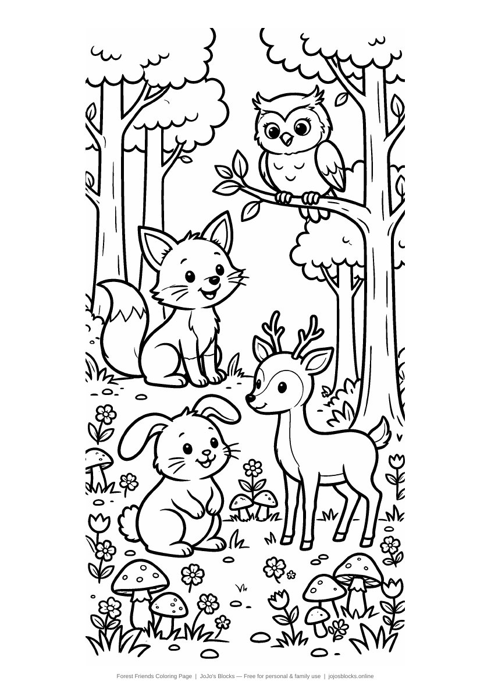
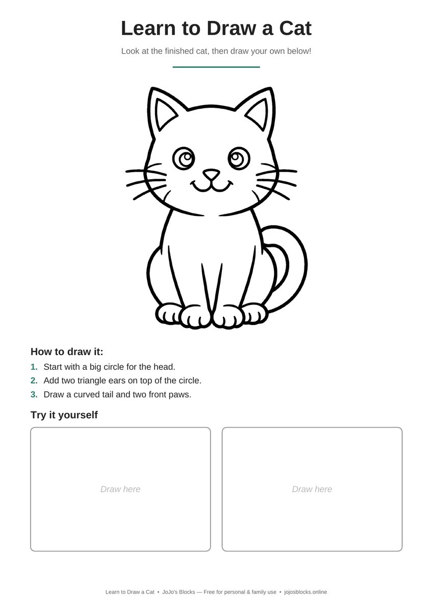
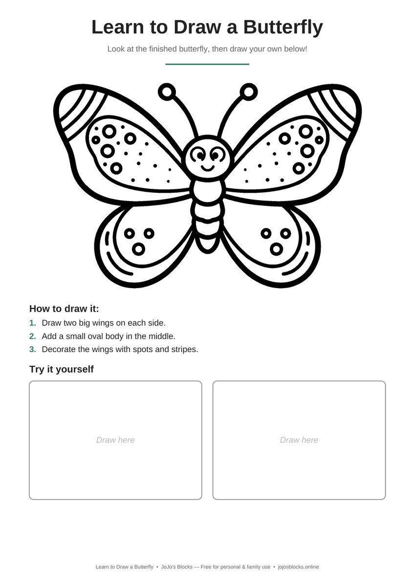
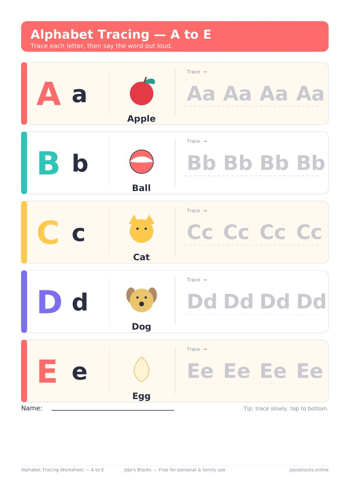
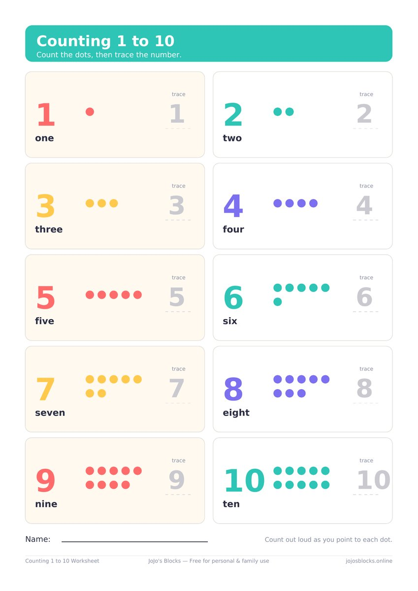
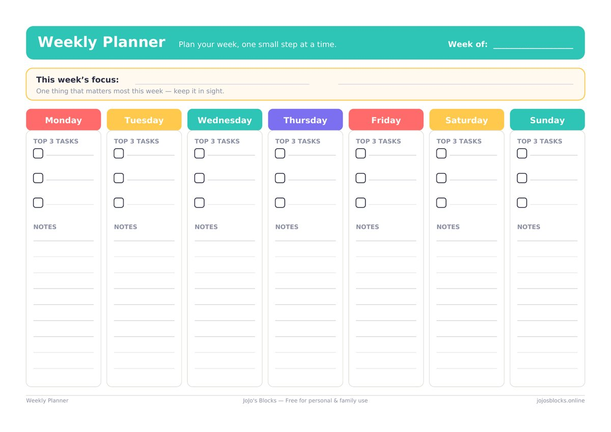
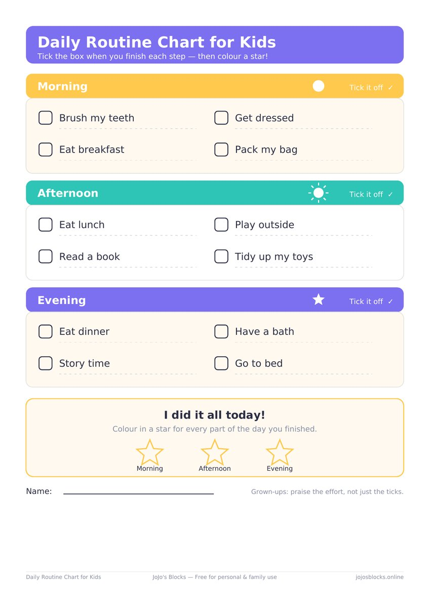
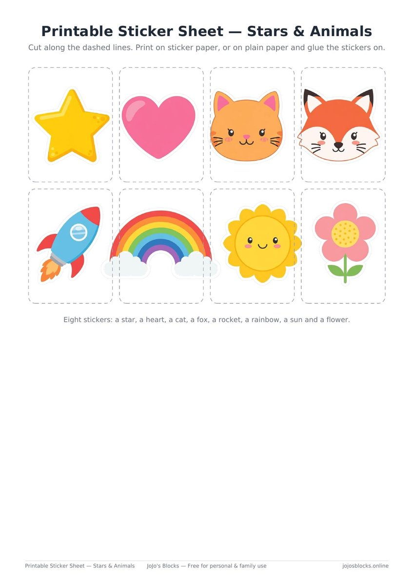
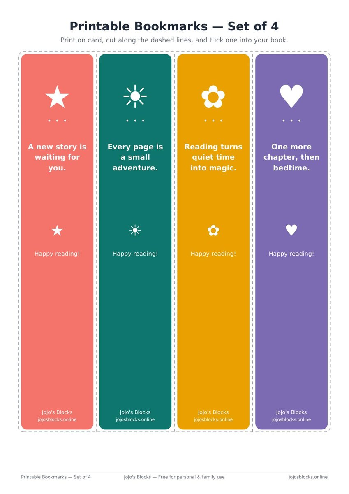
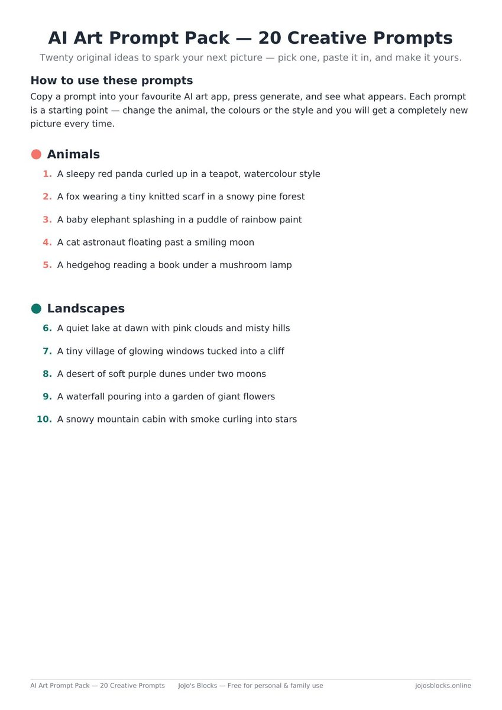

JoJo's Blocks Free Taster Pack
Four free printable coloring pages — one sample activity from each of our four books. Try the style and quality before you buy.
Get the Free Taster PackFree printables, coloring pages, worksheets and creative downloads for parents, teachers and homeschool families. Everything here is free to download — no sign-up, no account, just print and play.
The Free Taster Pack is a 6-page A4 PDF, and every free resource on this page is a single A4 PDF too (the weekly planner is A4 landscape, the phone wallpaper is a JPG). Open a file on a computer or tablet and print on A4 paper, choosing “Actual size” so the pages print exactly as designed. If your printer uses US Letter paper, choose “Fit to page” in the print dialog so nothing is cut off. Print one page at a time to start, so your child can try it before you print the rest. Every free resource is for personal and family use only, and you can print as many copies as you need for your own household — a favourite page can be coloured again and again.
The free pages suit ages 2 to 7, with each full book aimed a little more narrowly: the alphabet book is ages 2 to 4, the animal book ages 3 to 6, the community helpers book ages 4 to 7, and the space book ages 3 to 5. Younger children will enjoy the big shapes and simple colouring; older preschoolers can trace the words, remember the facts and retell them. Keep sessions short — five to 10 minutes suits many toddlers, 10 to 20 many preschoolers — and let your child stop whenever they lose interest.
Twelve free resources are ready to download today, alongside the Taster Pack: two colouring pages (Forest Friends and Under the Sea), two learn-to-draw sheets (a cat and a butterfly), two worksheets (alphabet tracing A to E and counting 1 to 10), a weekly planner and a daily routine chart, a sticker sheet, a set of four bookmarks, a phone wallpaper and a pack of 20 AI art prompts. Each one appears below only because it is actually ready — we do not list files that do not exist yet. More free downloads will be added as we make them, so check back.
No matches yet — try a different word, or browse the categories below.
Four free printable coloring pages — one sample activity from each of our four books. Try the style and quality before you buy.
Get the Free Taster Pack12 free resources to download, print and play with — no sign-up, no account, just print and play.

A friendly fox, rabbit, deer and owl among tall trees, mushrooms and flowers — a woodland scene for children to colour.

A dolphin, a turtle and little fish swim among coral, shells and bubbles in this under-the-sea colouring page.

A friendly sitting cat in bold black line art with three easy steps and two empty boxes for children to practise drawing their own cat.

A cheerful butterfly with big patterned wings in bold black line art, with three easy steps and two empty boxes for children to practise drawing their own butterfly.

Trace the letters A to E with big uppercase and lowercase models, a picture word for each letter (Apple, Ball, Cat, Dog, Egg), and a light-grey trace-over row.

Count and trace the numbers 1 to 10 in a 2 × 5 grid, with each cell showing the numeral, its number word, the matching number of dots to count, and a light-grey trace-over numeral.

Plan the whole week at a glance with seven Mon–Sun columns, each with three checkbox tasks and a ruled notes area, plus a 'This week's focus' box and 'Week of' line.

Tick off four morning, four afternoon, and four evening routine steps with checkboxes, then colour in a star for each part of the day in the 'I did it all today!' reward row.

Eight cute, ready-to-cut stickers — a star, heart, cat, fox, rocket, rainbow, sun and flower — on one A4 sheet with dashed cut lines.

Four colourful bookmarks (coral, teal, sun yellow and lavender) with a cheerful motif and an original reading quote on each, ready to print on card and cut apart.
A warm orange-and-pink sunset over layered mountains with a still lake reflection, sized 1080x1920 for phone screens.

Twenty original one-line AI art prompts in four categories of five — Animals, Landscapes, Fantasy and Everyday Magic — with a short how-to intro and a tips box.
Original sketches you can print and color at home — simple, bold line art made for little hands.
Browse →Printable sticker sheets for kids — cute characters, animals and shapes to cut out and stick.
Browse →Free templates for cards, planners, labels and creative projects — print, cut and make.
Browse →Free printable coloring pages and activities — download the Taster Pack and print at home.
Browse →Free coloring pages for kids — start with the Taster Pack, four pages from our four books.
Browse →Free wallpapers for phones and desktops — cheerful JoJo's Blocks art for your screen.
Browse →Free worksheets for letters, numbers, shapes and early learning — print and practise.
Browse →Free AI art prompts, guides and resources to help you create your own pictures and stories.
Browse →More free creative downloads — activity sheets, games and surprises as we make them.
Browse →